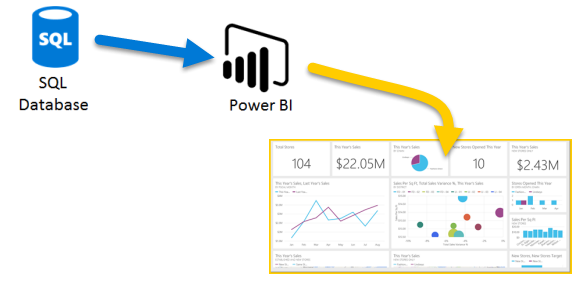

Hola, Soy Juan Pablo Cañas J.
TECNÓLOGO EN GESTIÓN DE SOFTWARE Y SISTEMAS | DATA ANALYST
Analista de Datos con 2 años de experiencia corporativa (Grupo Corona) y consultoría freelance. Mi perfil combina Business Intelligence (Power BI) con programación (SQL, Python, R) para impulsar la estrategia empresarial.
Descargar Resumen (CV)Habilidades y Tecnología Clave

SQL & Power BI
Dominio en la implementación de dashboards KPI, diseño de bases de datos y manipulación eficiente de datos para BI (Power BI, SAP Analytics Cloud).
Ver Stack CompletoModelado Predictivo & IA
Uso de Python y R en consultoría freelance para modelado predictivo, automatización de bases de datos y proyectos con enfoque en Cloud Computing.
Detalle de Experiencia